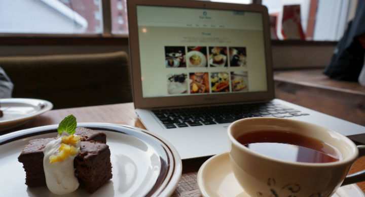

Cafe Debut
baser CMSカフェサイト用テーマ
baser CMSテーマイベント2012飲食店系テーマ賞受賞（受賞結果はこちら）
今すぐ、はじめてカフェサイトテーマ！
baserCMSは、「コーポレートサイトにちょうどいい」をキャッチコピーにしたケーキPHPベースの国産CMS.Cafeデビューは、baseCMSのテーマコン2012に応募するために、チムコもりこましゃ作成しました。
baserCMSのインストールと、Cafe Debutのテーマの初期設定を行った、あとはあなたのスマートフォンのInstagramで写真を撮ってください。
Instagramのおしゃれ写真で、すぐに素敵なカフェサイトが出来上がりましたフォトブログ風baserCMSテーマです。
| コモモ | 企画・デザイン・baserCMSテーマの組み込み担当 |
|---|---|
| モリコ | HTML/CSSコーティング担当 |
| ひろくましゃ | プラグイン制作、テーマ実装の難しいところとか担当 |
プラグインでInstagramとの連携
プラグインでInstagramと連携して、トップページにInstagramで撮影した写真がすぐに現れます。
レスポンデザインでスカルプトン、タブレット表示も快適
さまざまなデザインの表示対応、レスポンシデザインを採用しました.Instagramでお店のメニューを撮影してすぐにスマートフォンで確認できるのも嬉しい♪
ウェブフォントだから、飾り文字やアイコンもキレイ
サイトのタイトルやアイコン、主要な見出しは、Google Web Font、アイフォンはウェッブフォント（Fontello）を採用しています。拡大縮小されるスマートフォンやタブレットでも解像度を気にすることなくキレイな文字とアイコン表示を実現できました。